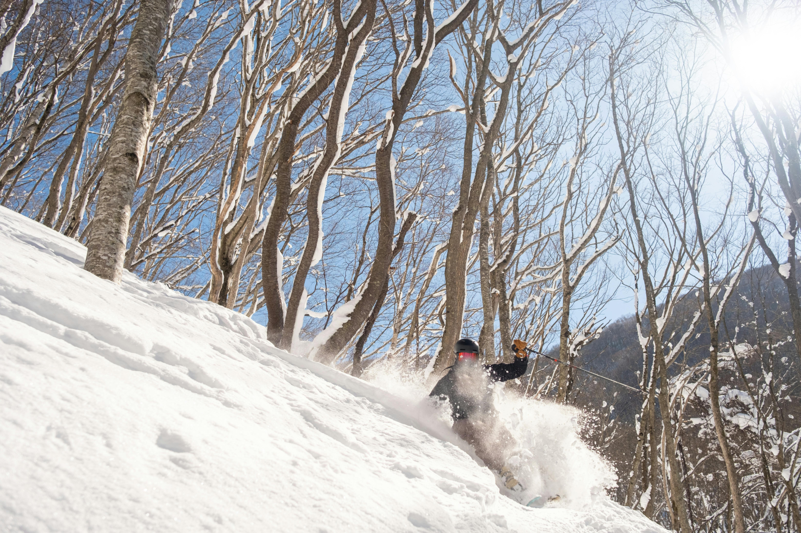
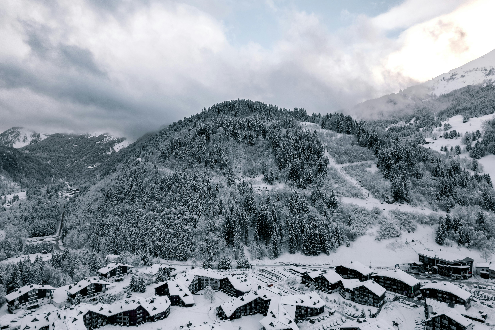
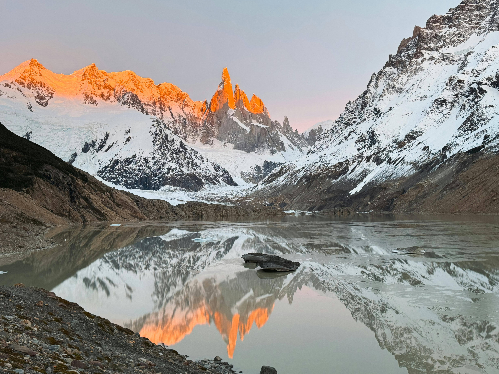

Destinations
Japan — Powder & Culture
Why go: Japan is famed for its light, deep powder and consistent snowfall. Resorts like Niseko and Hakuba offer world-class off-piste and a unique cultural experience off the snow—onsen, food, and warm hospitality.
Caption: Floating through Niseko powder.
The Alps — Classic & Luxurious
Why go: The Alps combine iconic peaks, a broad range of terrain and a luxury alpine culture. From Zermatt to Chamonix and Courchevel, you’ll find everything from steep technical lines to groomed perfection.
Caption: Bluebird days in the high Alps.
Patagonia — Remote & Dramatic
Why go: Patagonia’s dramatic landscapes and fewer crowds make it ideal for adventurous skiers seeking untouched terrain and unforgettable experiences. Think wide-open runs and Andean vistas.
Caption: Andes ridgelines and pristine snow.